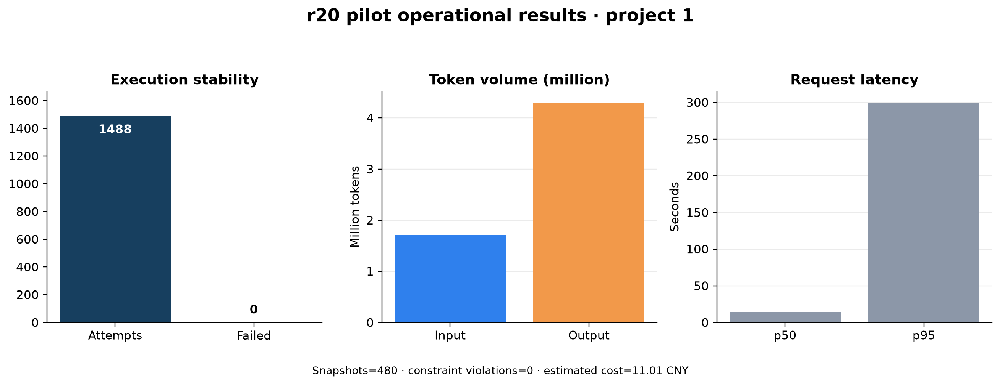
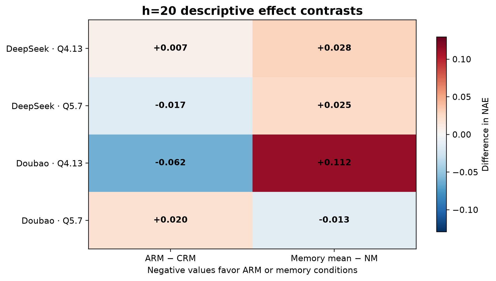
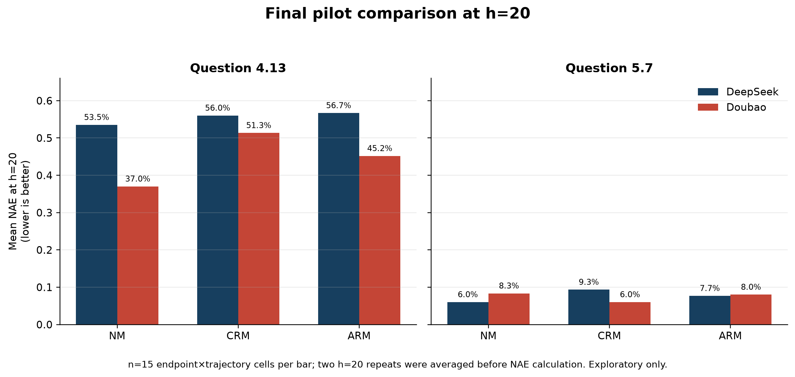
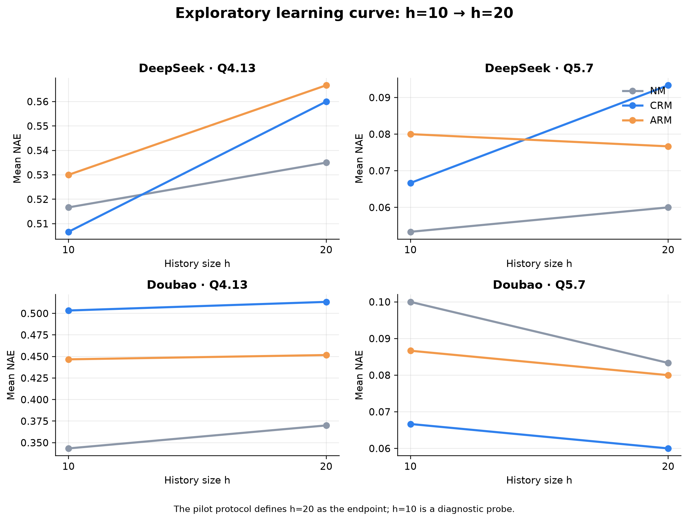

项目1技术试点可视化结果
题目：4.13、5.7 · r20 pilot · 完成状态：completed
以下 NAE 图表是对已完成技术试点的事后探索性分析，不改变系统中 pilot technical-only 的锁定报告状态，也不构成正式 RQ1/RQ2 结论。
Attempts1,488
失败调用0
记忆约束违规0
估算成本¥11.01
运行与资源指标


实验结果


h=20 描述性汇总
NAE 越低越好；两次 h=20 重复评分先取平均，再计算 NAE。
| 模型 | 题目 | NM | CRM | ARM | ARM − CRM | Memory mean − NM |
|---|---|---|---|---|---|---|
| DeepSeek | 4.13 | 0.5350 | 0.5600 | 0.5667 | +0.0067 | +0.0283 |
| DeepSeek | 5.7 | 0.0600 | 0.0933 | 0.0767 | −0.0167 | +0.0250 |
| Doubao | 4.13 | 0.3700 | 0.5133 | 0.4517 | −0.0617 | +0.1125 |
| Doubao | 5.7 | 0.0833 | 0.0600 | 0.0800 | +0.0200 | −0.0133 |